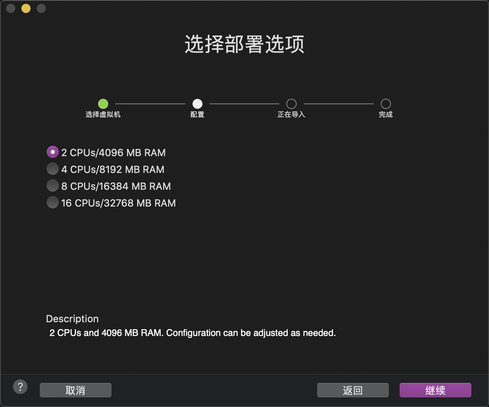
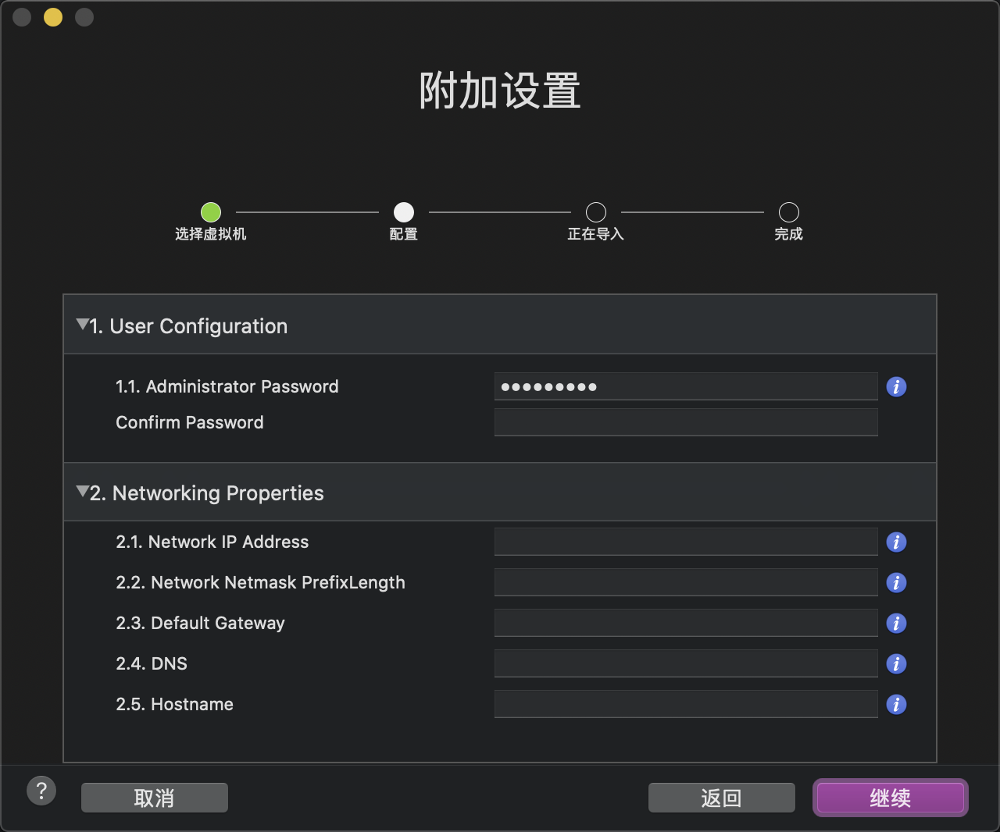

作者：gc(at)sysin.org，主页：www.sysin.org
转载请保留出处。

Version 1809, Updated 1909，Build 17763.737，OVF Build Date：2020.05.20
部署截图


下载地址
1 | 链接: https://pan.baidu.com/s/1vVKMYQuLd-PXf8kU9lNhbA 密码: bkjj |
OVF 特性
1. OVF 版本
- VM 版本 11，即兼容 ESXi 6.0 / Fusion 7.x / Workstation 11.x / Player 7.x 及以上版本
- VM-Tools 基于 vSphere 7.0，版本：11.0.5
- 启用 CPU、内存热添加
2. 系统配置
- 安装时选择时间和货币格式：Chinese (Simplified, China)，键盘和输入方法：简体中文–美式键盘（US）
- 系统版本：Windows Server 2019 Datacenter, with DesktopExperience
- 分区：System Reserve（549M），C 盘 40G 整数分区
- 启用远程桌面
- 启用 ICMPv4 防火墙规则
- 新建了一个名为 sysadmin 的管理员账号（可以删除）
3. 多语言界面支持
本次英文版添加了简体中文界面语言支持，切换方法如下：
Settings > Time & Language > Language, Windows Display Languages 下拉勾选 ”Chinese (Simplified, China)”
4. 系统激活
SLIC 2.5 OEM 激活，证书使用 Dell。使用定制版的 VMware ESXi 自动激活。
5. 系统组件
- 添加组件：Telnet Client、SNMP-Service、Windows Backup
- 添加组件：.NETFX 3.5 (启用此组件需要系统 iso 镜像)
6. 远程桌面性能优化
- 禁用 Logon Backgroud
echo 个性化设置：禁用登录背景 Logon Image
reg add “HKEY_LOCAL_MACHINE\Software\Policies\Microsoft\Windows\System” /v DisableLogonBackgroundImage /t REG_DWORD /d 1 /f - 更换 Lock Screen 为默认蓝色
echo 个性化设置：禁用设置中 Lock Screen 功能
reg add “HKEY_LOCAL_MACHINE\SOFTWARE\Policies\Microsoft\Windows\Personalization” /v NoLockScreen /t REG_DWORD /d 1 /f - 替换 Desktop Backgroud 为灰色
应用软件
- AutoRuns 13.90、7-Zip 19.00、Unlocker 1.9.2（全部为免费软件）
8. 个性化配置
用户配置
1
2echo 个性化配置：标题栏显示颜色（仅针对当前用户有效，针对计算机设置无效）（此项可通过 Load Hive 预先配置）
reg add "HKEY_CURRENT_USER\SOFTWARE\Microsoft\Windows\DWM" /v ColorPrevalence /t REG_DWORD /d 1 /f几个关于隐私和使用记录的配置，通过HKEY_LOCAL_MACHINE进行配置
1
2
3
4
5
6
7
8
9
10
11echo 个性化配置：Turn off to Show recently opened items in Jump Lists on Start or the taskbar
reg add "HKEY_LOCAL_MACHINE\Software\Microsoft\Windows\CurrentVersion\Explorer\Advanced" /v Start_TrackDocs /t REG_DWORD /d 0 /f
echo Folder Options：Open File Explorer to: This PC
reg add "HKEY_LOCAL_MACHINE\SOFTWARE\Microsoft\Windows\CurrentVersion\Explorer\Advanced" /v LaunchTo /t REG_DWORD /d 1 /f
echo Folder Options：Turn off to Show recently used files in Quick access
reg add "HKEY_LOCAL_MACHINE\SOFTWARE\Microsoft\Windows\CurrentVersion\Explorer" /v ShowRecent /t REG_DWORD /d 0 /f
echo Folder Options：Turn off to Show frequently used folders in Quick access
reg add "HKEY_LOCAL_MACHINE\SOFTWARE\Microsoft\Windows\CurrentVersion\Explorer" /v ShowFrequent /t REG_DWORD /d 0 /f
9. 备注
当前 Windows Server 2019 2020 年 4 月份更新已经发布，经过测试英文版无法添加简体中文的语言包，故废弃。
充分利用 Windows Server
Windows Server 2019 是连接本地环境与 Azure 的操作系统，在增加更多安全层级的同时帮助你实现应用程序和基础结构现代化。

将你的数据中心扩展至 Azure，最大化你的投资并获取新的混合功能。

从操作系统开始，通过保护数据中心以提升您的安全状况。

支持创建云原生应用程序，并使用容器和微服务实现传统应用程序的现代化。

改进你的数据中心基础结构，实现更高的效率和安全性。
了解有关 Windows Server 的更多信息

利用这个基于浏览器的应用程序管理服务器、群集、超融合基础结构以及 Windows 10 电脑。

了解如何使用分步指南与各种资源，将你的 Windows 工作负载迁移到 Azure。

现在，你可以利用搭载 Azure 的云端的所有优势。免费开始。

了解 Windows Server 2019 中的最新功能，以及如何通过与 Windows Admin Center 混合使用来实现现代化。
了解各公司如何使用 Windows Server 和 Azure 发挥其潜力


比较 Windows 服务器不同版本的特性
查看 Windows Server 2019 相较于旧版本在新混合、安全性、基础架构和应用程序平台等方面的特性。
下载 Windows Server 2019 功能特性比较摘要
Windows Server 资源
特色资源
- Windows Server 的新增功能
- 《Windows Server 2019 终极指南》电子书
- 混合操作数据表
- 《基于 Azure 的 Windows Server 终极指南》电子书
- Windows Server 2008 支持结束指导
部署
- Windows Server 2016 系统要求
- Windows Server 安装、升级和迁移
- Windows Server 视频和演示
- Windows Server 文档
- 开始使用 Windows Server 2016 Essentials
- 安装 Nano Server 选项
管理
培训
- Windows Server 课程 - Microsoft 虚拟学院
- Windows Server 培训
- [Windows Server 认证](https://www.microsoft.com/learning/browse-all-certifications.aspx?technology=windows server)
- Windows Server 虚拟实验室
技术支持
社区
如果文章中使用的内容和图片侵犯了您的版权，请联系作者删除。如果您喜欢这篇文章或者觉得它对您有用，欢迎您发表评论，也欢迎您分享这个网站，或者赞赏一下作者，谢谢！
 支付宝打赏
支付宝打赏
 微信打赏
微信打赏
赞赏一下